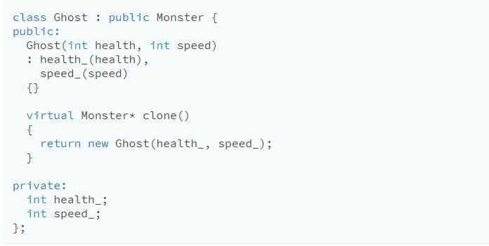
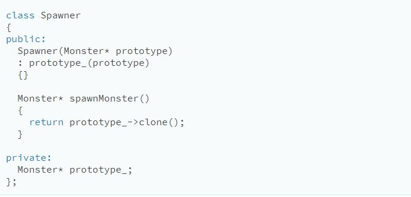

The Problem
Computers typically operate in sequential way by breaking large tasks into smaller ones. In this way, computers will perform one task at a time, one after another. Modern computers are so fast that the human eye cannot perceive each step, namely in image processing.
However, in the world of video games, the computer must render graphics in real time, and update each image every frame. Since computers perform one task at a time, running video games in this way runs into a problem. Graphics are constantly being rendered while the game runs. The intention of this design pattern is to display every pixel at the same time, instead of one pixel at a time.
The Key Idea
Design Patterns are tried and true methods of making our lives easier as Software Engineers. Since there is a pattern among making monsters (Ghosts, Demons, and Sorcerers are all Monsters )and making spawners for each monster (Ghost Spawner, Demon Spawner, and Sorcerer Spawner are all Spawners, then the Prototype Pattern demands that we make something that repeats this pattern for us.
Implementation
To implement this, we give our base class, Monster, an abstract clone() method:

Every class that derives from the base class would then proceed to create an implementation returns a new object identical in class and state to itself.
Once all our monsters support that, we no longer need a spawner class for each monster class. Instead, we define a single one:
